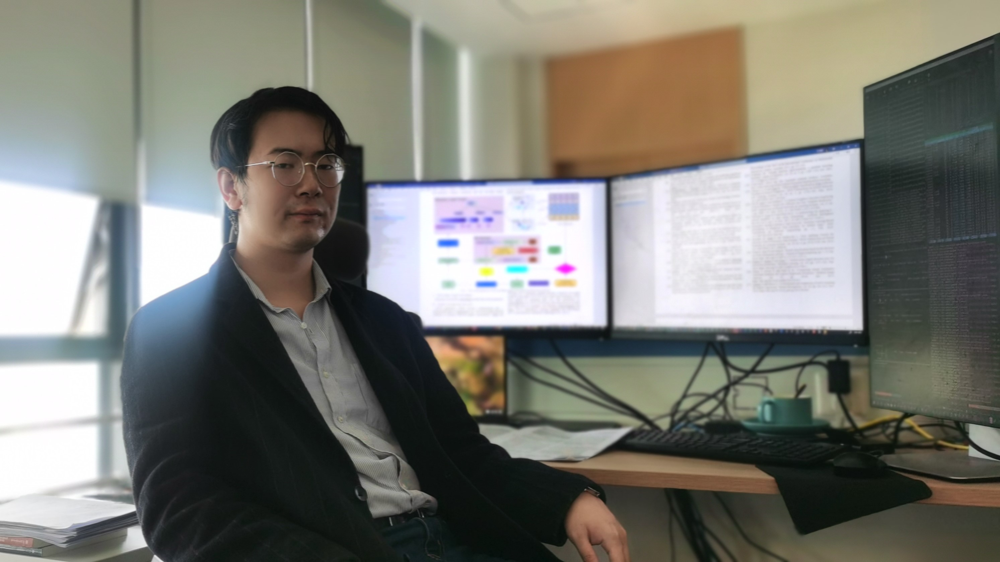
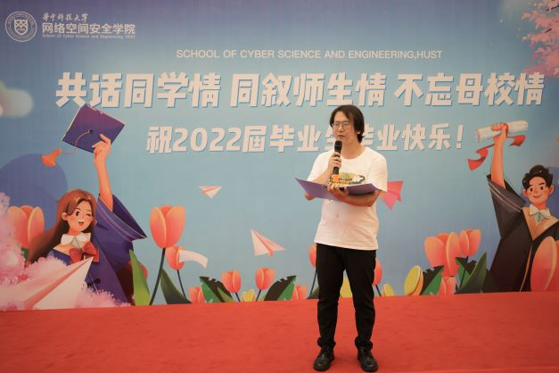

|
 |
Johannes received his Master's degree (Sep.2019-Jun.2022, major: Cyber Security) at Huazhong University of Science and Technology, Wuhan.
Johannes received his Bachelor's degree (Sep.2015-Jun.2019, major: Mathematics and Applied Mathematics) at Zhengzhou Unversity, Zhengzhou.
Johannes aims to achieve success both in Computer Science and Music Art. For more information about the science and art activities of Johannes, you are welcome to browse flyinghuster and weekendcomposer.
|
Research Interests
Latest News
|
Johanens Gave a talk at National Cybersecurity Center. |
09/2022: [Service] Serve as PC Chairs' Team of AACL-IJCNLP(SRW).
09/2022: [Paper] Our paper about relation extraction was promoted by hackdig.com and CGCL in Huazhong University of Science and Technology.
07/2022: [Paper] Our paper, Our paper, MATT: A Multiple-instance Attention Mechanism for Long-tail Music Genre Classification, is accepted as a full paper by SMC’22.
07/2022: [Service] Serve as external reviewer of Middleware’22.
06/2022: [Talk] Give a talk on behalf of excellent graduates of Huazhong University of Science and Technology in National Cybersecurity Center.
06/2022: [Activity] Play Music with Yuanyuan Li, the Academician of Chinese Academy.
06/2022: [Service] Serve as external reviewer of ISSRE’22.
02/2022: [Service] Serve as reviewer of IJCNN’22.
|
|